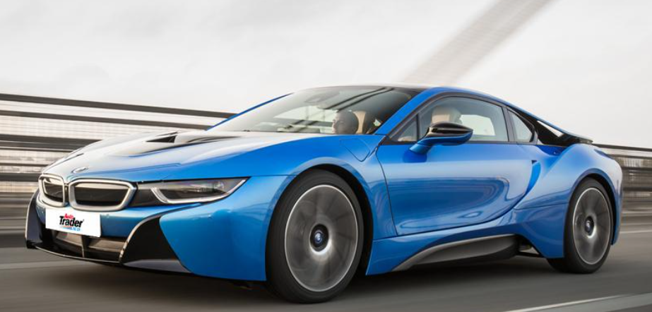
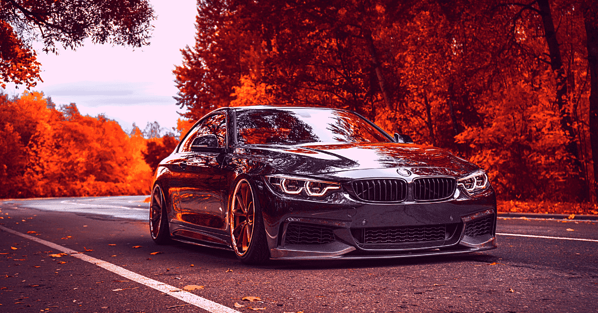
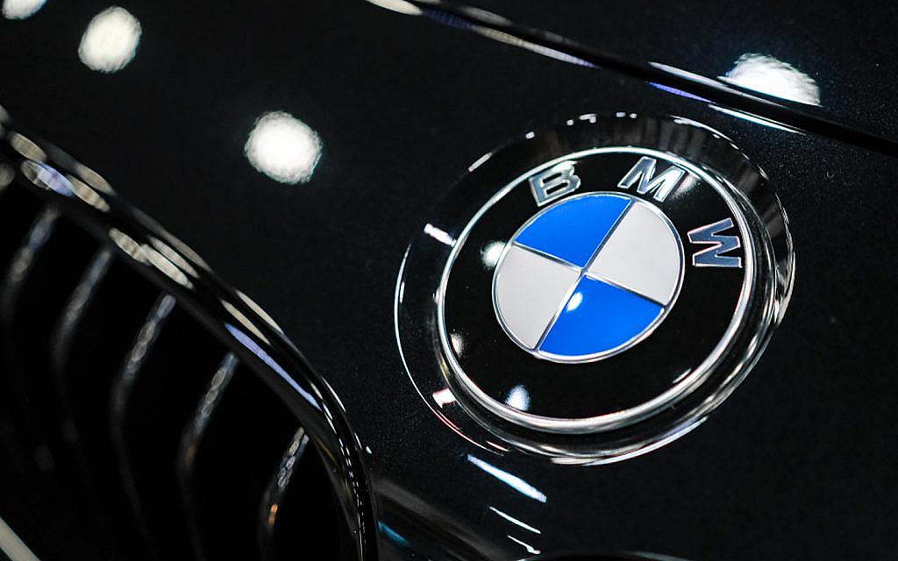
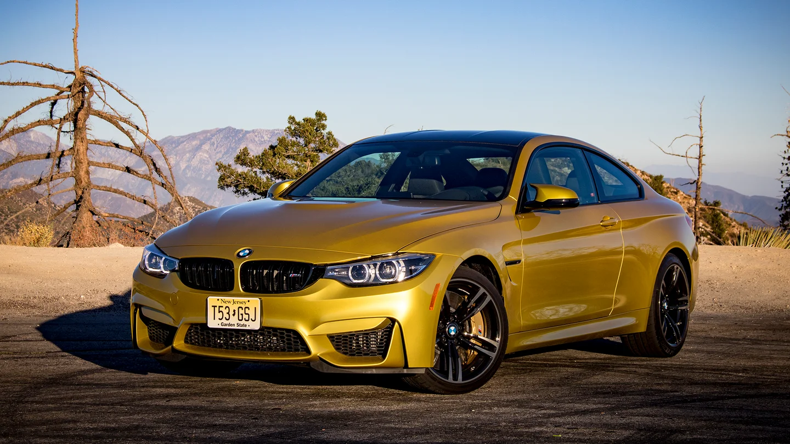

BMW are one of the most well-known, established car brands in the world. Producing both executive and city cars alike, BMW has a rich and interesting history. In fact, BMW started as three other manufacturing companies. So how did it become the prestigious car brand we know and love today? In this article, we look at the history of BMW, from its founding to the present day.
As we mentioned, BMW started as three separate manufacturing companies. These were Rapp Motorenwerke, Bayersiche Flugzeugwerke, both in Bavaria and Fahrzeugfabrik Eisenach in Thuringia. It became Bayerische Motren Werke GmbH (BMW) in April 1917. However, they didn’t start making cars straight away. Instead, they produced aircraft engines. As it was in the middle of the First World War, this is to be expected. Their first product was the BMW IIIa aircraft engine. It had a good fuel economy and performed well at high altitudes which resulted in a huge amount of orders from the German military, leading to rapid expansion for BMW. After the War ended BMW was forced to stop producing aircraft engines due to the terms in the Treaty of Versailles. To maintain business, they produced railway brakes, household items and farm equipment. When the restrictions of the Treaty of Versailles began to be lifted in 1923, BMW started producing motorcycles, starting with the R32 model. They started producing cars in 1928 after the company purchased the Automobilwerk Eisenach car company. Their current model was the Dixi 3/15 which was a licensed copy of the Austin 7. This begun production in 1927 and became the BMW 3/15. The first vehicle designed entirely by BMW was the 3/20 and was produced in 1920. It was powered by a four-cylinder engine, based on the Austin 7 engine. The first straight-six engine vehicle was released in 1933 and was the BMW 303. Throughout this period, BMW expanded their range to include sedans, convertibles and coupes.
During the ban, BMW salvaged equipment and used second-hand materials to make pots and pans, then later producing kitchen supplies and bicycles. They were granted permission to resume production of motorbikes in 1947, the first being the R24. Despite being banned from making cars, Bristol Aeroplane Company in the UK were making vehicles based on BMW’s pre-war models. BMW started making cars again in 1952, the first of which is the BMW 501 which was a large sedan. They expanded their model range throughout the 1950s. This included sports cars, sedans, coupes and convertibles. The BMW 502 had a V8 engine and was the first BMW to do so. Their affordable model, the Isetta, was a micro-car produced in 1955.
In 1997, the owner of Bentley, Vickers, announced it was going to sell Rolls-Royce Motors. Originally, the choice for a buyer was BMW because they supplied components and engines for Bentley and Rolls-Royce. Both Vickers and BMW also built aircraft engines. BMW offered £340 million for Rolls-Royce Motors, but Volkswagen outbid them by offering £430 million. However, Volkswagen only owned the vehicle designs, production and administrative facilities and model nameplates. They also owned the Spirit of Ecstasy and Rolls-Royce grille shape trademarks. Sounds like a lot, right? It was, except they didn’t have access to the name Rolls-Royce or the logo. These were still owned by Rolls-Royce Holdings. The following year, in 1998, BMW began supplying components for a new range of Bentley and Rolls-Royce cars. They paid Rolls-Royce £40 million to licence their name and logo. So BMW owns the name and logo, Volkswagen owns everything else. Essentially, either brand can build Rolls-Royce vehicles despite owning bits of the company. After a battle and a long negotiation, it was decided that BMW would supply engines and components and Volkswagen would have the access to the names and logos from 1998 to 2002. From 2003, BMW would be the sole provider of cars with the Rolls-Royce marque and Volkswagen would have Bentley, which they said they wanted more anyway. They have since launched the Rolls-Royce Ghost.
